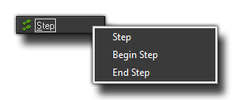

The Step
Events
GameMaker: Studio splits time into steps with the
room speed defining how many of these steps there are supposed to
be per second. A step, is basically the loop that runs constantly
with all the events being checked and triggered as necessary while
the game runs, so as you can imagine, the Step Event is an
event that is checked every single step of the game while the
instance exists.
The step event is actually comprised of three sub events
that are outlined below: 
For most things the standard step event will be fine to use, but
sometimes you want a bit more control over what code runs and at
what time, so for that you are provided with the begin and end step
events. All three are checked every step, but their order will
never vary even through future updates to the GameMaker:
Studio engine, which means that this is the only reliable
method of making sure that something always happens before
something else. So what can the step event be used for? Well, it
can be used for actions or code that needs to be executed
continuously. For example, if one object should follow another,
here you can adapt the direction of motion towards the object we
are following to keep it moving smoothly behind. Be careful with
this event though! Don't put many complicated actions in the step
event of objects, especially if you are planning on having lots of
instances of the object in your game room, as this might slow the
game down.